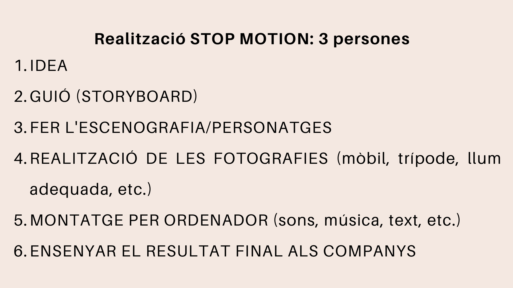
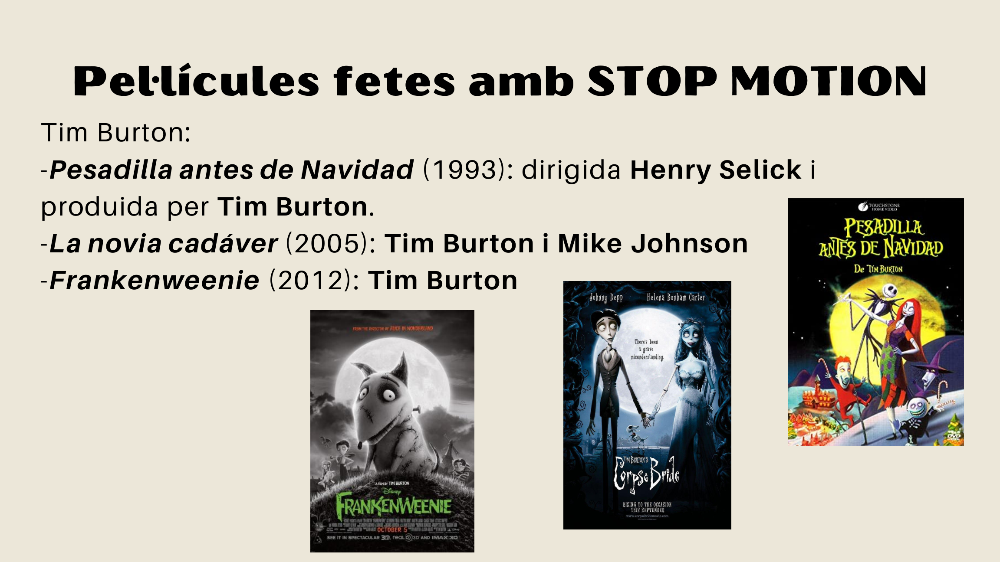

Activitat de classe
Proposta
En grups de 3 persones, haureu de crear una animació breu utilitzant la tècnica de stop motion.

Passos de treball
- Pensar la idea.
- Escriure el guió.
- Fer l'storyboard.
- Construir l'escenografia i els personatges.
- Realitzar les fotografies amb mòbil, trípode i llum adequada.
- Fer el muntatge per ordinador.
- Afegir sons, música o text si és necessari.
- Mostrar el resultat final als companys.
Materials possibles
Podeu utilitzar:
- plastilina;
- cartolines;
- caixes de sabates;
- revistes;
- papers de colors;
- joguets;
- peces de construcció;
- objectes quotidians;
- mòbil o càmera;
- trípode o suport estable.
Storyboard
L'storyboard serveix per planificar visualment la història abans de començar a fer fotografies.
| Vinyeta | Què passa? | Pla o enquadre | So o text |
|---|---|---|---|
| 1 | Presentació del personatge | Pla general | Música inicial |
| 2 | Apareix el problema | Pla mitjà | Efecte de sorpresa |
| 3 | El personatge actua | Pla detall | So d'acció |
| 4 | Resolució final | Pla general | Crèdits finals |
Recomanacions
<div class="admonition tip"><strong>Consell</strong> Feu moviments molt xicotets entre una fotografia i la següent. Si els canvis són massa grans, l'animació quedarà tallada. </div> Abans d'entregar, reviseu:
- que el vídeo tinga inici, desenvolupament i final;
- que la càmera no es moga;
- que la llum siga estable;
- que els arxius estiguen ordenats;
- que el muntatge final es veja correctament.
Exemples coneguts
Algunes obres fetes amb stop motion són:
| Obra | Any | Autor o estudi |
|---|---|---|
| Pesadilla antes de Navidad | 1993 | Henry Selick / Tim Burton |
| La novia cadáver | 2005 | Tim Burton i Mike Johnson |
| Coraline | 2009 | Henry Selick |
| Mary and Max | 2009 | Adam Elliot |
| ParaNorman | 2012 | Chris Butler i Sam Fell |
| Pinotxo | 2022 | Guillermo del Toro i Mark Gustafson |
| La oveja Shaun | 2007 | Aardman Animations |
